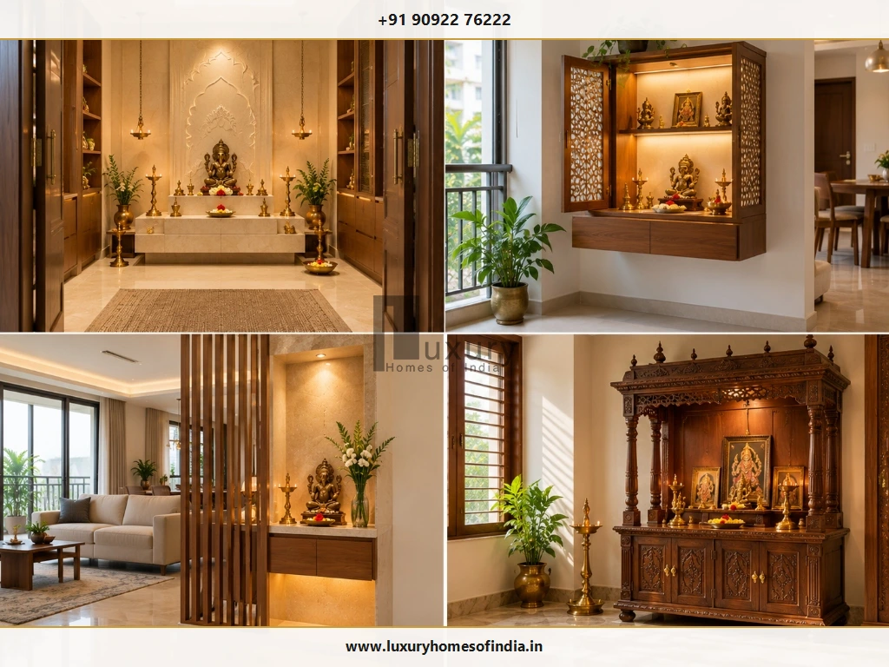
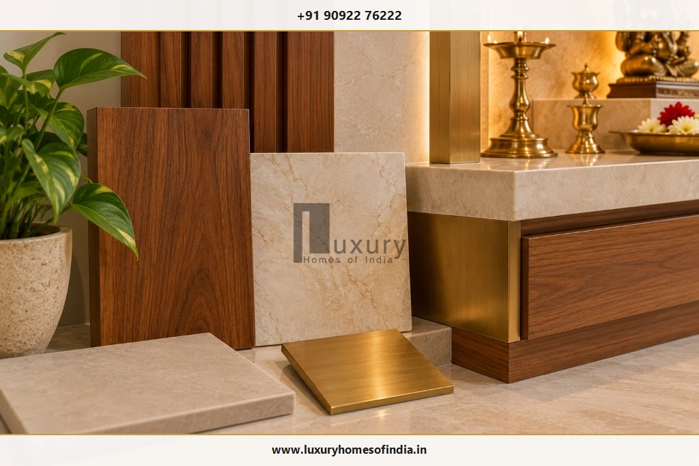
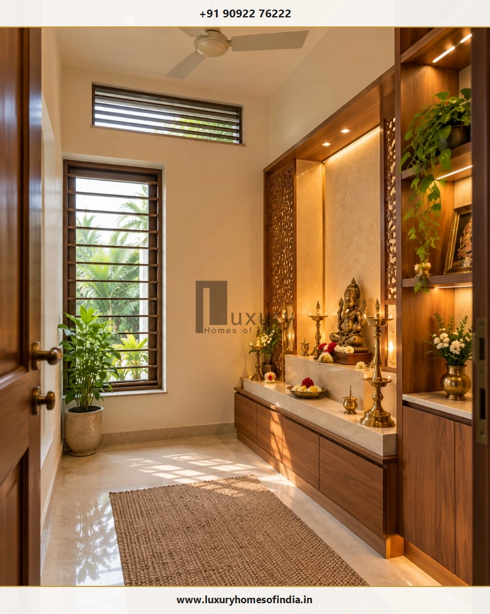
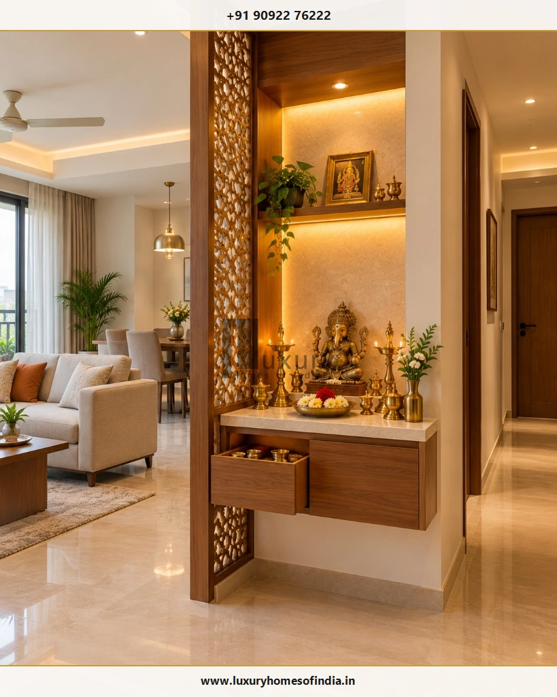

Executive Summary: Pooja Room Planning at a Glance
A well-planned pooja room brings together family traditions, thoughtful architecture and practical interior design. Whether you are designing a dedicated mandir room in an independent villa or a compact prayer niche in an urban apartment, the right placement, lighting, materials, storage and ventilation can make the space more serene and comfortable for everyday worship.
The north-east (Ishanya) is traditionally preferred for a pooja room in many interpretations of Vastu Shastra, while east and north are widely considered viable alternatives. These are traditional cultural preferences, not universal building requirements. The best location depends on the actual measured floor plan, the family's customs, daylight access and the practical circulation needs of the household.
For a new home, decide the prayer space during early architectural planning. Early coordination aligns the altar, circulation routes, joinery cabinetry, electrical points and diya ventilation before structural execution and interior finishes are locked in. In an existing home or flat, a dedicated room is not essential: a well-designed wall-mounted mandir, prayer cabinet or jaali-screened niche provides an equally respectful and functional solution.

1. Where Should a Pooja Room Be Placed?
Pooja room placement should balance the family's Vastu preferences with the floor plan, available space, privacy, natural light and practical daily access. In Indian architectural traditions, the prayer space is treated as an anchor of calm, but it must function smoothly alongside active household zones.
| Location / Direction | Traditional Vastu Preference | Practical Architectural Consideration |
|---|---|---|
| North-east (Ishanya) | Commonly preferred for worship and spiritual focus. | Check usable wall space, daylight from eastern windows, and the overall floor plan flow. |
| East | Often considered a natural alternative (solar energy). | Consider morning light, acoustic privacy from entrance hallways, and the altar's position. |
| North | Another commonly preferred option (Kubera direction). | Check furniture placement, wardrobe clearance, and convenient family access. |
| West | Accepted in some regional traditions and interpretations. | Confirm the arrangement against the family's specific ancestral customs. |
| South or South-west | Discouraged by many Vastu practitioners (heavy energy). | Evaluate existing layout constraints rather than undertaking disruptive redesigns blindly. |
Guidance vs Statutory Requirements
Vastu interpretations vary between practitioners and regional traditions. Treat these directions as helpful guidance for design discussions with your architect, not as a rigid substitute for architectural judgement, structural safety or statutory building regulations.
Should a Pooja Room Be in the North-East Corner?
The north-east corner, often designated as Ishanya in traditional texts, is widely revered because it receives gentle early-morning solar radiation without harsh afternoon heat. If this quadrant is available in your house floor plan, incorporating the prayer space here can create a serene, naturally lit environment.
However, avoid forcing a prayer room into the north-east if doing so compromises primary circulation corridors, structural column placement, bathroom plumbing stacks or essential cross-ventilation. In modern apartments and completed homes, a quiet, meticulously maintained prayer niche in the east or north living quadrant is far more practical and respectful than extensive structural demolitions.
2. Which Direction Should You Face While Praying?
Many Vastu practitioners recommend that worshippers face east or north during prayer. East is traditionally associated with the rising sun, clarity and new beginnings, while north is associated with stability and mental focus. Guidance regarding which direction the deities or idols should face can differ depending on the deity and specific family lineage.
Altar Placement Coordination Checklist
Before fixing the altar platform or commissioning carpentry, confirm the following with your design team:
- Main mandir wall: Which wall will hold the primary backdrop, mandapam, or idol niche.
- Ergonomic posture clearances: Where family members will sit on the floor (padmasana), kneel, or stand during aarti.
- Ritual movement: Whether the arrangement accommodates customary circumambulation (pradakshina) or festival gatherings.
- Clearances & access: Whether doors, drawers, prayer book ledges, and floor cushions leave unhindered passage.
- Lamp and offering zones: Where traditional brass oil lamps (kuthu vilakku), incense holders, bell ropes, and daily prasadam trays will be positioned safely.
These spatial decisions are far simpler and more economical to coordinate before electrical conduits, joinery cabinetry, and wall cladding are installed. If Vastu alignment is important to your household, review the concept drawings with your consultant and architectural team simultaneously.
3. Which Pooja Room Design Suits Your Home?
The right pooja room design depends on the total square footage of the home, household routines, storage requirements, and the desired degree of visual or acoustic separation from surrounding spaces.

4. How Much Space Does a Pooja Room Need?
There is no mandatory size prescribed for a pooja space. Dimensions should stem from how your family intends to use the area every day versus during special gatherings.
A compact wall niche of 2.5 × 1.5 ft may be more than sufficient for an individual offering morning prayers. Conversely, an independent villa might allocate a dedicated 6 × 8 ft or 8 × 10 ft room that comfortably accommodates four to six seated worshippers, extended family members during festivals like Diwali or Pongal, and extensive pooja paraphernalia.
Clearance Factors to Account For:
- Idol and photo dimensions: Height of the main vigraha, background prabhavali, or framed images to establish comfortable sightlines.
- Deepam and offering counter: Minimum 15 to 18 inches of front ledge depth for oil lamps, camphor burners, flowers, and offering vessels.
- Ergonomic posture: Floor seating requires at least 3 × 3 ft of clear floor space per person to sit comfortably without touching adjoining walls.
- Movement and rituals: Ample perimeter clearance for performing aarti and lighting hanging bells without accidental knocks.
- Concealed storage: Low-height drawers or side cabinets for storing ghee, wicks, dhoop sticks, pooja literature, and seasonal brassware.
- Door swing & shutters: Outward-swinging or double-shutter doors (traditionally preferred in Vastu) so opening them does not sweep against worshippers.
Always verify dimensions using a scale layout drawing rather than estimating from photographs, ensuring that human circulation and ritual activities remain comfortable.
5. Which Materials Work Best for a Pooja Room?
Material choices in a prayer room directly influence the spiritual ambience, ease of daily cleaning, longevity under intense heat from diyas, and resilience against oily stains and turmeric/kumkum pigments.

Wood and Wood Finishes
Natural timber such as Teakwood, Rosewood, or Sheesham imparts warmth, traditional reverence, and acoustic quietness. If engineered boards (MDF, Marine Ply) are specified for wall panelling, verify high moisture resistance (BWP grade) and use fire-retardant polyurethane coatings.
Fire safety precaution: Keep timber panels and decorative cornices safely separated from open flames. Never place oil lamps directly on an untreated wooden shelf.
Marble and Granite
White Makrana marble is historically celebrated for temple shrines due to its purity and light reflectance. Flawless white or beige Italian marble creates a serene pedestal, while polished black or tan-brown granite provides exceptional durability and stain resistance against oil, camphor residue, and kumkum spills.
Support engineering: Natural stone slabs carry significant dead weight. Ensure heavy stone altars are supported by reinforced masonry bases or heavy-gauge steel cantilevers.
Tiles and Non-Porous Backdrops
Large-format vitrified tiles with subtle onyx or statuario patterns offer virtually seamless backdrops with minimal grout joints. They are non-porous, highly resistant to heat, and clean effortlessly with a damp microfiber cloth.
Brass and Metal Accents
Traditional brass hanging lamps (thooku vilakku), bells, engraved thresholds, and door hardware introduce timeless metallic warmth. Mount brass elements securely to wall framing or ceiling anchors so they do not obstruct prayer movements or foul electrical light fixtures.
Core Design Principle
Select one or two primary background materials (such as warm teak paired with serene ivory stone) and use decorative metallic accents selectively. A restrained, disciplined palette helps a small mandir feel contemplative and spacious rather than crowded.
6. What Colours and Finishes Suit a Modern Pooja Room?
The colour palette should complement your home's broader interior design scheme while fostering a peaceful, reflective mental state.
Ivory, Pearl & Warm White
Delivers an uncluttered, luminous backdrop that enhances both natural daylight and warm artificial lighting, highlighting stone carvings and brass diyas beautifully.
Natural Wood & Cream
A balanced, timeless pairing for traditional and transitional Indian residences. The natural wood grains introduce depth and grounding.
Beige & Muted Metallic Accents
A sophisticated contemporary palette for modern homeowners who prefer understated elegance with brushed champagne gold or matte brass inlays.
Honed Stone & Fluted Timber
A texture-led architectural approach where fluted wooden panels and textured stone tiles supply visual depth without relying on excessive ornamentation.
These palettes represent refined design options rather than dogmatic rules. Choose hues and textures that align with your family's personal preferences, maintenance habits, and the available daylight in the room.
7. How Should Pooja Room Lighting Be Planned?
Good lighting design transforms a mandir from a static display into a soul-stirring sanctuary. Illumination must illuminate the deities clearly, provide functional task lighting for reading sacred scriptures, and ensure safe floor circulation during early mornings and late evenings.

Four Essential Lighting Layers
- Ambient illumination: Soft, indirect light from false-ceiling coves or warm wall sconces (2700K to 3000K warm white). Do not rely exclusively on dramatic backdrop silhouettes that leave the floor or drawer storage in dark shadows.
- Accent & focus lighting: Narrow-beam, anti-glare ceiling spotlights (15° to 24° beam spread) aimed precisely at the principal deities to accentuate their craftsmanship without creating harsh glare for seated worshippers.
- Task lighting: Adequate, diffuse light around preparation ledges for reading slokas, rolling cotton wicks, preparing thali offerings, and cleaning.
- Natural daylight: An operable window or high-level clerestory opening that welcomes auspicious morning daylight while maintaining family privacy.
Electrical Safety & Conduit Coordination
Plan all electrical conduits, switchboard heights, LED driver enclosures, and sensor circuits before joinery work begins. Position switchboards at comfortable standing reach (48 inches from floor) and keep all electrical fittings, wire runs, and low-voltage drivers strictly isolated from oil dispensers, flame splatter, and water vessels.
8. How Can You Manage Ventilation and Diya Smoke?
Burning sesame oil lamps, pure ghee wicks, fragrant dhoop, and camphor produces soot, airborne particulate matter, and heat. In an enclosed pooja room, unmanaged smoke will quickly discolour marble ceilings, leave sticky residue on woodwork, and trigger respiratory discomfort.
| Ventilation Challenge | Engineering Risk | Recommended Architectural Solution |
|---|---|---|
| Accumulated Diya Soot | Stains false ceiling boards and dulls white marble backdrops. | Install a heat-resistant glass or brass chimney hood above the main lamp platform. |
| Camphor & Dhoop Smoke | Stagnant air, eye irritation, and respiratory difficulty during long aartis. | Provide a silent, ducted mechanical exhaust fan venting directly to an external building duct. |
| Flame Turbulence | Strong cross-breezes cause unstable flames, soot scatter, and fire hazards. | Position high-level louvers or clerestory vents so natural airflow circulates above flame height. |
| Combustible Proximity | Curtains or low wooden pelmets catching fire from flared wicks. | Maintain a minimum 24-inch fire-safe vertical clearance above open flame sources. |
Exhaust Fan Coordination
There is no universal one-size-fits-all exhaust fan. Fan capacity (CFM) should be calculated based on room volume, frequency of havan or deepam rituals, and exterior wall accessibility. Ensure backdraft shutters prevent dust or insects from entering when the exhaust fan is switched off.
9. Pooja Room Design Ideas for Small Apartments
A dedicated separate room is a luxury that not every city apartment or compact floor plan can afford. A thoughtfully detailed prayer unit can establish a deeply spiritual focal point without consuming valuable carpet area.

- Capitalise on vertical wall space: Install a floor-to-ceiling modular prayer unit featuring open idol ledges at eye level and closed storage drawers below.
- Incorporate sliding jaali screens: Perforated wooden, brass, or acrylic jaali screens allow you to close the mandir during dinner parties or social gatherings while maintaining airflow.
- Integrate pull-out pooja trays: Concealed extension trays slide out smoothly to hold heavy aarti thalis, incense burners, and prayer books, then tuck away flush when worship concludes.
- Floating cabinetry for floor maintenance: Suspending the mandir console 12 to 15 inches above the floor allows effortless sweeping and mopping underneath without moving sacred furniture.
- Work with your existing apartment orientation: In a completed flat, select the quietest, cleanest corner in the north-east, east, or north zone of the living-dining area rather than attempting costly demolition.
10. Common Pooja Room Planning Mistakes to Avoid
Before breaking ground on construction or signing off on interior carpentry, review your drawings against these ten frequently encountered mistakes:
- Blind reliance on generic Vastu charts: Applying generic diagrams without considering the site's true orientation, window placements, or room proportions.
- Planning the altar after civil work is completed: Trying to add wiring, water points, or exhaust vents after tiles and masonry are finished leads to messy surface conduits.
- Underestimating ritual storage requirements: Failing to plan dedicated storage results in prayer books, matchboxes, oil bottles, and extra wicks cluttering the altar ledge.
- Placing open flames directly under timber cabinetry: Mounting wooden storage cabinets or shelves directly above deepams creates an acute fire hazard and severe soot damage.
- Choosing porous, stain-prone altar materials: Using unsealed, highly absorbent stones that permanently absorb turmeric, kumkum, and oil stains.
- Suffocating the room with zero ventilation: Omitting natural cross-ventilation or mechanical exhaust, resulting in eye-watering smoke during daily aarti.
- Positioning electrical switchboards behind idols: Forcing family members to reach across lit lamps or water pots to switch lights on or off.
- Allowing door clashes in narrow circulation paths: Mandir doors that block hallway circulation or clash with adjacent bedroom doors when opened.
- Concealing electrical drivers with no maintenance access: Embedding LED transformers inside permanent gypsum or plywood ceilings with no access hatch.
- Using slick, slippery polished floor tiles: Installing mirror-polished floor tiles that become dangerously slick when oil or holy water is accidentally spilt.
11. Pooja Room Planning Checklist Before Construction
Share this practical coordination checklist with your architect, interior designer, and structural consultant during early blueprint reviews:
Format & Typology Decision
Decide whether your residence requires a dedicated walk-in pooja room, a recessed architectural niche, a standalone cabinet, or a wall-mounted mandir.
Direction & Floor Plan Orientation
Confirm the family's Vastu priorities with your architect and align the prayer space with the true cardinal north-east, east, or north quadrant on the measured blueprint.
Altar Wall & Worshipper Ergonomics
Fix the primary altar wall and confirm that worshippers will face east or north while praying, allowing at least 3 ft of clear floor space per seated devotee.
Ritual Clearances & Offering Trays
Confirm deepam clearances, brass lamp bases, flower plate space, and pull-out preparation trays before finalizing joinery sizes.
Integrated Storage Details
Detail drawers, compartmentalised shelves, and concealed cabinets for ghee, wicks, dhoop, and seasonal festival utensils.
Material Selection & Fire Safety
Select heat-resistant stone for altar countertops, fire-retardant timber finishes, and stain-resistant wall claddings.
Electrical, LED & Conduit Coordination
Locate light switches outside flame splash zones, embed warm LED strip channels, and provide accessible driver panels.
Ventilation & Smoke Extraction
Assess natural window airflow paths, high-level smoke release louvers, and dedicated mechanical exhaust ducting.
Door Movement & Circulation
Verify outward or double-leaf door swings, carved jaali clearances, and smooth room circulation.
Maintenance & Deep Cleaning Access
Ensure every carved surface, back-lit panel, and floor junction is easily reachable for periodic dusting and deep cleaning.
Frequently Asked Questions
Plan Your Sacred Space with Luxury Homes of India
The pooja room is the spiritual heart of an Indian home. Discuss your Vastu preferences, custom mandir joinery, and architectural blueprints with LHI's dedicated villa design and construction team in Chennai.
Schedule Architecture Consultation